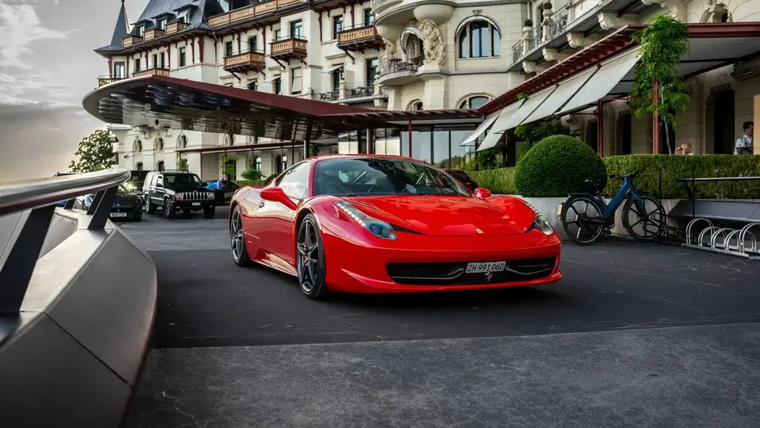
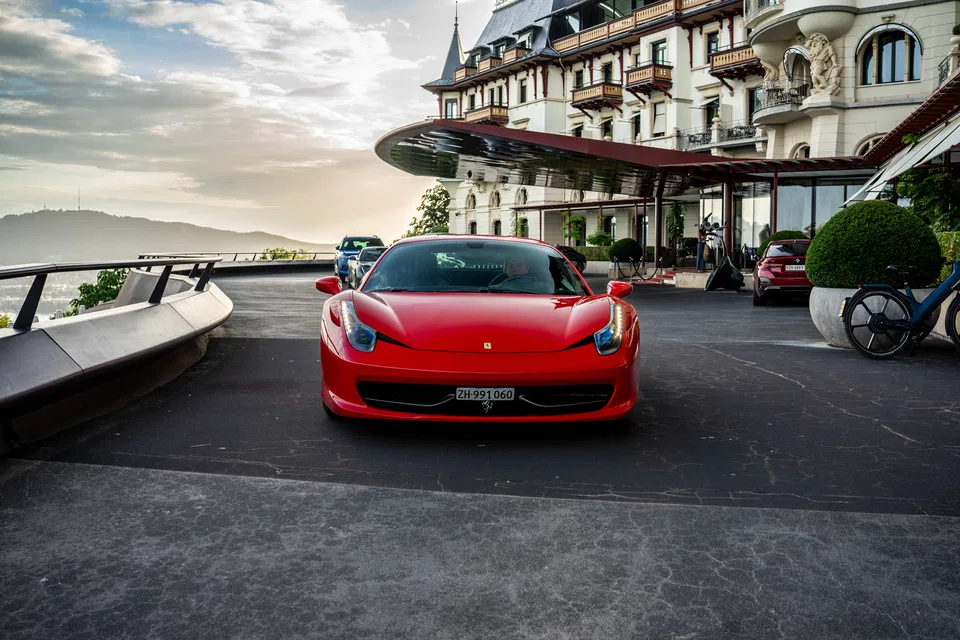
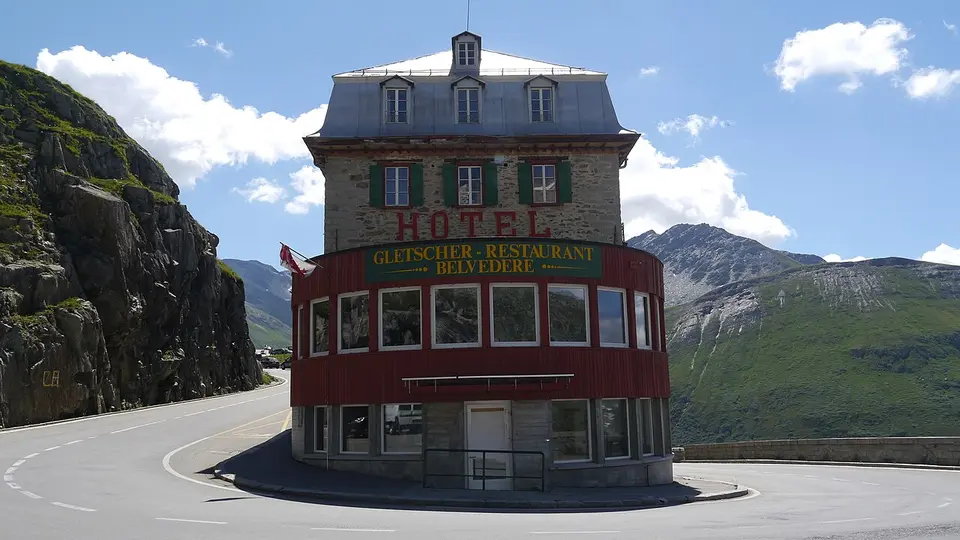
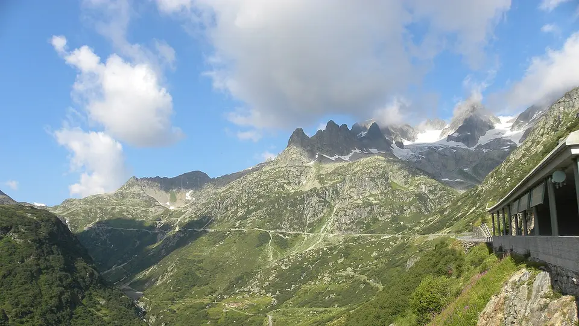
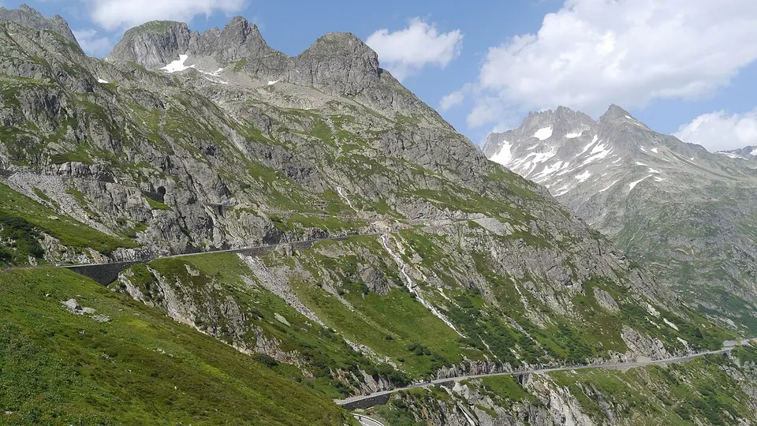
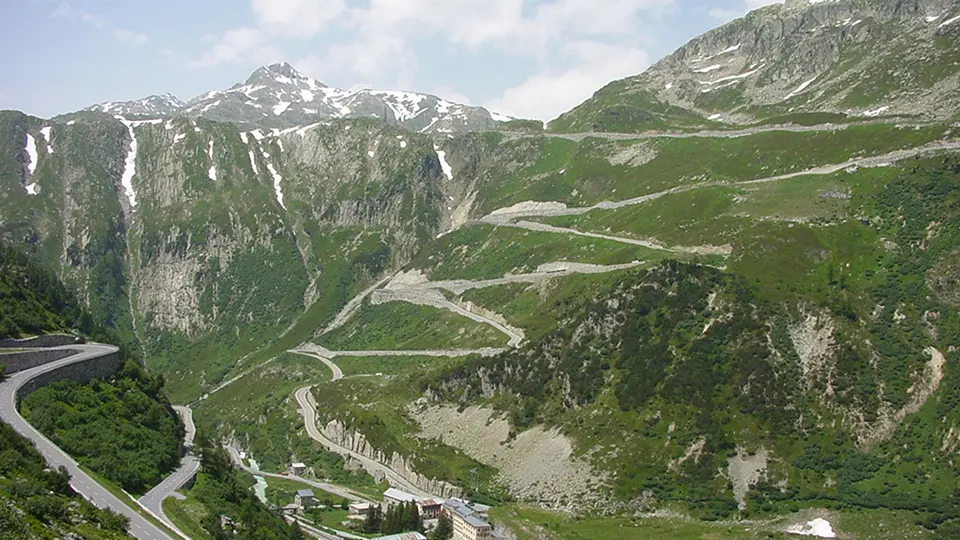

The request was remarkably precise. An international guest was travelling onward through Europe with his son, who shared his enthusiasm for exceptional cars. Before visiting other countries, they wanted to discover the Switzerland that no single postcard can contain. The car had to be a naturally aspirated, mid engine Ferrari with enough character to make every pass road more than a connection between valleys. His clear preference was the Ferrari 458 Italia.
A full week would not fit the wider itinerary. The 48 hour experience was therefore extended by another 24 hours. Those 72 hours combined a first night in Zurich with two nights at the Radisson Blu Hotel Reussen in Andermatt. From there, two carefully planned driving days reached the Furka, Nufenen, Susten and Grimsel passes, with the Schöllenen Gorge, Lake Lucerne and Lauterbrunnen adding a different kind of Swiss landmark.
A father and son journey built around the Ferrari 458
This was not a rushed exercise in collecting destinations. It was a three day story with a clear rhythm: Zurich for the opening, Andermatt as an Alpine base and enough time to understand what makes every pass different.
Why the Ferrari 458 Italia was chosen for this journey
The 458 Italia was not a casual choice. Its 4.5 litre V8 sits immediately behind the occupants, breathes without turbochargers and revs to 9,000 rpm. On Swiss pass roads, the intensity does not come from maximum speed. It comes from immediate throttle response, accurate steering, rapid gear changes and a soundtrack that evolves with every climb.
A father and son journey is also about the memory they share. The intimate cabin, wide view through the windscreen and each carefully chosen pause make the road itself the destination. The Ferrari remains present throughout, yet never overwhelms the landscape.

Day 1. Arriving in Zurich and finding the rhythm
The first evening remained relaxed after the handover. Father and son became familiar with the Ferrari on less demanding roads, adjusted the seating position and driving mode, and allowed Zurich to become part of the setting. Staying in the city removed pressure after their international arrival and meant that the long Alpine chapter could begin with fresh energy.
The road towards Andermatt followed Lake Lucerne before entering the Schöllenen Gorge. The Devil's Bridge, the River Reuss and sheer rock walls explain why the Gotthard route has been one of Europe's essential north to south connections for centuries. A few minutes later they arrived at the Radisson Blu Hotel Reussen, Andermatt, their base for the next two nights.
The following pass sections follow the order experienced on the documented trip; the suggested Furka–Grimsel–Susten loop is a separate itinerary.
Furka Pass. The dramatic stage of the Rhône Glacier
From Andermatt, the road climbed through Realp to the Furka Pass at 2,429 metres. Its eastern approach demands attention. Tight hairpins, open slopes and fast changing weather make every section feel significant. Beyond the summit, the famous bend around the historic Hotel Belvédère comes into view. Below it lies the Rhône Glacier, source of one of Europe's major rivers.
What distinguishes Furka is its cinematic scale. The road appeared in Goldfinger, but feels larger in person than it does on screen. The 458 was perfectly at home in the scene, its red body standing out against grey rock, lingering snow and the deep green of the Urseren Valley.

Nufenen Pass. Space, altitude and a different rhythm
After descending towards Gletsch, the route continued through the upper Rhône Valley to Ulrichen and climbed to the Nufenen Pass at 2,478 metres. It connects Valais with Ticino and feels distinctly different from Furka. The road is broader, the slopes appear more open and the long gradients allow the driver to build a smooth rhythm.
Near the summit, views stretch across a sparse high Alpine landscape towards glaciated peaks. For the Ferrari, this meant less tight drama than Furka, but longer, clearer lines and an impressive change of scenery between the German and Italian speaking regions of Switzerland.

Susten Pass. The road that feels made for the 458
The second major driving day began early. Via Wassen, they joined the eastern approach to the Susten Pass. Opened in 1945, the road was deliberately designed for modern traffic. That heritage is visible in its harmonious line, readable corners and tunnel windows that repeatedly reveal fresh views of the mountains.
The landscape around the Stein Glacier is especially memorable. Waterfalls spill over dark rock while the road gains altitude in generous arcs. Of the four passes, Susten may be the place where the Ferrari 458's chassis, balance and steering communicate most clearly.

Lauterbrunnen. A detour into the valley of 72 waterfalls
Beyond Innertkirchen, the Bernese Oberland opens out. Instead of returning immediately towards Grimsel, father and son extended the route through Meiringen and along Lake Brienz to Lauterbrunnen. The valley is enclosed by almost vertical rock faces and is known for its 72 waterfalls. Staubbach Falls drops about 297 metres over the cliff and can be seen directly from the village.
With more time, the Aare Gorge near Meiringen or a quiet stop beside Lake Brienz can also be added. For this journey, the contrast was enough: the technical precision of Susten in the morning and, by afternoon, a valley that belongs among Switzerland's great scenic experiences without needing a summit.
Grimsel Pass. Granite, reservoirs and a European watershed
The return route climbed to the Grimsel Pass at 2,164 metres. The Räterichsboden, Grimsel and Totensee reservoirs sit among smooth granite, severe rock faces and monumental dams. The landscape feels rawer and more engineered than Susten, almost like a stage made from stone and water.
Grimsel stands on a major European watershed. Water to the north reaches the Rhine and the North Sea through the Aare, while water to the south flows into the Rhône and the Mediterranean. That geography gives the pass an unusual sense of scale. At Gletsch the circuit closed, before the route crossed Furka once more and returned to Andermatt.

The number of kilometres was not what remained in memory. It was the changing combination of sound, scenery and time together. Every pass revealed a different side of the Ferrari 458 Italia.
Day 4. Returning to Zurich and continuing through Europe
After their second night in Andermatt, the final chapter led back to Zurich. Seventy two hours remained compact enough for the wider European itinerary and generous enough for the four passes to feel like more than a checklist. By the time the Ferrari was returned, it was no longer simply the car they had chosen. It had become the red thread connecting a shared journey.
How to make a four pass tour realistic
Furka, Nufenen, Susten and Grimsel are seasonal high Alpine roads. Depending on snow, they generally open in early summer and may close at short notice because of fresh snow, heavy rain or clearance work. Official traffic information, weather and visibility must therefore be checked before every departure. A map is a plan, not a guarantee that the route is open.
Early starts, sensible breaks and alternative valley routes matter more than a rigid schedule. Andermatt is a strong base because it keeps several directions open. More ideas are available in our guide to scenic drives from Zurich and in our Ferrari 458 Klausen Pass client story.
Plan your own Ferrari Alps journey
An extension or bespoke itinerary can be requested, subject to availability. Explore Ferrari rental in Zurich, our options for Ferrari experiences in Andermatt and the current packages and prices. You can also send a direct enquiry for personal route planning.
Frequently asked questions
Are 72 hours enough for Furka, Nufenen, Susten and Grimsel?
Yes, when the passes are open, the weather is stable and the daily plan is realistic. Two nights in Andermatt provide a central base. The order should still adapt to traffic, visibility and road conditions.
Why is Andermatt a good base for a Swiss Alps road trip?
Andermatt sits between several of the best known Swiss pass roads. Furka and Nufenen, or Susten and Grimsel, can be combined into separate day routes from the village.
When are the four Alpine passes normally open?
The high Alpine passes are seasonal and are generally accessible from early summer into autumn. Exact dates depend on snow, weather and clearance work. Check the live status immediately before departure.
Can a 48 hour package be extended to 72 hours?
Additional rental time can be requested and depends on availability. For this bespoke experience, 24 hours were added to the 48 hour package.
Choose a starting point for your Alpine route
For this three-pass loop, see current handover information on Ferrari rental Andermatt; collection is normally in Altdorf UR. For a separate driving day in Graubünden, Ferrari rental Chur and Ferrari rental Davos help you plan. Davos pickups are normally arranged in Chur. This Graubünden stage is outside the loop described here.
Compare pass routes, seasonal closures and rental durations in our Swiss alpine driving guide.